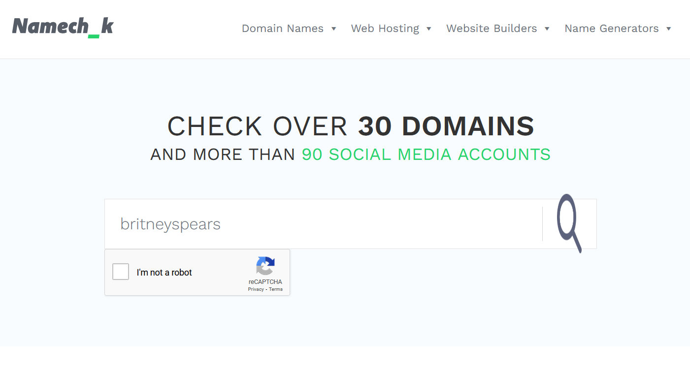

Trainees Edition
Trainers Edition
Trainees Edition
Trainers Edition
Module 16: Verification Tools and Techniques *
Module Description
The main purpose of this Module is to explain the tools and methods that can be used for verification.
The secondary aim is to guide trainers who want to use the content of this Module to train their trainees.
With these aims, tools and methods that can be used in verification along with guidelines about how to teach the subject are presented.
Trainees who successfully complete this Module will be able to:
- differentiate the concepts of fact-checking and verification
- understand the importance of verification
- understand the four key elements that need to be addressed in verification
- apply image and video verification methods and use their tools
- apply location verification methods and use tools
- apply the necessary methods and use the necessary tools to verify any social media account
- apply the necessary methods and use the necessary tools to verify any website
- apply the methods of detecting bots and trolls and use the necessary tools
Additionally, trainers who successfully complete this Module, will be able to demonstrate an understanding of how to teach the different verification tools and techniques based on the content (such as image, video, location, social media account, web site).
(*) Case studies in Module 16 were prepared by Esra Özgür from Teyit.org. Teyit.org is the associate partner of Hacettepe University in this project.
Module Structure
This Module consists of the following parts:
- Objective, Description of the Content and Learning Outcomes
- Structure of the Module
- Guidelines for Trainees
- Guidelines for Trainers (how to get prepared, methods to use and tips for trainers)
- Content (study materials and exercises)
- Quiz
- Resources (references and recommended sources and videos)
Main objectives of the Module, description of the content and the learning outcomes are explained in the Module Description part. Guidelines for Trainees includes instructions and suggestions for trainees. Guidelines for Trainers leads trainers through different phases of the training and provides tips which could be useful while teaching the subject. Content includes all study materials and the content related exercises. Quiz includes multiple choice and true/false questions for trainees to test their progress. Resources have two components: references and recommended sources for further reading and study. References is the list of sources cited in the content part. Recommended resources consist of a list of supplemental sources and videos which are highly recommended to read and watch for learning more on the topic.
Guidelines for Trainees
Trainees are expected to read the text, watch recommended videos and do the exercises. They can consult suggested resources for further information. After completing the study of the content trainees are strongly suggested to take the quiz to evaluate their progress. They can revise the study material if needed.
Guidelines for Trainers
Guidelines for trainers includes suggestions and tips for trainers about how to use the content of this Module to train people on the subject.
Getting Prepared
Preparing a presentation (PowerPoint/Prezi/Canva) which is enriched with visual materials (images and video clips) and clear solid examples is strongly suggested. It is also suggested to adapt the examples and exercises in this Module to issues which are more familiar to the actual target group. Choosing local examples (country specific) regarding the current or well known issues help to illustrate a point more clearly. It also helps to draw the attention of trainees. The more familiar and popular the examples are, the better the message will be communicated.
Getting Started
A short quiz (3 to 5 questions) in Kahoot or questions with Mentimeter can be used at the beginning for engaging participants in the topic. It can be used as a motivation tool as well as a tool to check trainees’ existing knowledge about the subject. Some examples for questions could be: What is verification? Do you use any verification tools?
Methods to Use
Various teaching methods can be used in combination during the training. Such as:
- Lecturing
- Discussion
- Group work
- Self reflection
Tips for Trainers
Warming-up
An effective way of involving participants and setting common expectations about what they will learn is to ask a few preliminary questions on the subject. This can be done through group work by asking trainees to discuss and collect ideas, but also individually by asking each participant to write their ideas on sticky notes. The activity can be conducted as follows:
- Ask trainees whether they come across any content (image, text, video, etc.) on social media that they doubt its accuracy.
- When they encounter suspicious content, they can be asked whether they try to verify this content.
- They may be asked what steps they take when they try to verify suspicious content.
Presenting the Objective of the Lesson
The objective of the lesson should be made clear (which is the tools and methods that can be used for verification). Following the warming-up questions it will be easier to clarify the objectives.
Presenting the Lesson Content
While presenting the content make sure to interact with the trainees and encourage them for active participation.
- While providing training on this module, it is important who the target audience is. Because, verification skills require efficient use of computer or mobile devices and search tools. Such technical skills may vary according to different factors (such as age, education level). For example, older adults may find it difficult to use verification methods and tools if they cannot use the computer or mobile devices and search tools effectively. Therefore, such trainees can be trained for the use of simpler tools (such as Google and its sub-tools). In contrast, trainees (such as university students) with more effective skills in using the relevant tools may need more in-depth knowledge of verification methods and tools than is offered. In this case, the resources under the title of Recommended Sources can be used.
- In order to teach the verification tools and methods effectively, priority should be given to the trainees' practice of tools and methods in the lessons. If possible, practice questions/case studies should be prepared in advance and trainees should be able to answer these questions using the tools and methods they learned in the lesson.
- During the in-class practice, trainees can be asked where they have difficulties. In this way, it will be understood more clearly what parts of the subject are not fully understood. These topics can be repeated and examples related to the topic can be enriched.
- While explaining the subject, examples from daily life should be included.
- Both local and international examples can be used in the course. This will help trainees assimilate the subject.
Concluding
Make a short summary of the lesson and ask a couple of questions which help underlying the most important messages you would like to give.
Following question can help:
- Ask trainees what are the elements that need to be addressed in verification
When concluding, make sure that trainees understand that there are a number of methods and tools that can be used to verify different types of content.
Content: Verification Tools and Techniques
Introduction
Before giving information about verification tools and methods, it is useful to explain what verification means and why it is important.
What are Verification and Fact-checking?
Verification and fact-checking are two separate journalism practices that are often used interchangeably. Although these two concepts seem closely related, they have some differences that can sometimes cause confusion (Mantzarlis, 2015; Silverman, 2020b). Today, in parallel with the spread of the problem of mis/disinformation, these terms have ceased to be just journalism practices, but have turned into skills that every citizen should have at the basic level.
Verification is a process that evaluates the accuracy of a news before it becomes "news". It focuses specifically on user-generated content. It pays more attention to the reliability of the source of the claim (Mantzarlis, 2015, 2018). Fact-checking, on the other hand, is a process that takes place after publication and compares an open claim made publicly with reliable and authentic sources. It also focuses on the logic, coherence, and context of the claim (Mantzarlis, 2015). In fact, it can be said that fact-checking has shifted significantly from traditional broadcasting to the field of political journalism. In other words, fact-checking in its current sense increasingly focuses on controlling the statements of politicians and other public figures (Silverman, 2020b).
Debunking, on the other hand, is a subset of verification and requires a certain set of skills in common with verification (Mantzarlis, 2018). In cases where it is not possible to prevent false information, it is important to debunking the false information. Clearly explaining why the information is wrong and what is actually true ensures that debunking is effective. If the debunking is not presented in detail, mis/disinformation can persist (Lewandowsky et al, 2020, p. 4).

Mantzarlis, 2018, p. 83
Verifiability
Before verifying any content, it's important to make sure that it is linked to an event that actually happened (Urbani, 2019, p. 10). If there is no event as claimed in the content, there will be no point in verifying that content. Therefore, in order to investigate the accuracy of the claim made, it is necessary to find evidence related to that claim. For example, since personal opinions are based on people's own feelings, thoughts and ideas are subjective, they cannot be verified.
Importance of the Verification
The fact that smartphones have become a part of our lives in parallel with the development of technology has allowed everyone to easily take videos, share and disseminate these content that they produced directly. Especially the widespread use of social media platforms has provided such an environment for everyone who is able to use some basic tools like smart phones or computers. People may also produce and share some newsworthy content from their social media accounts. When it comes to newsworthy content, news organisations and platforms can also benefit from such user-generated content (Wardle, n.d., p. 25-26). However, this requires taking into account the risk that the content may contain false information, intentionally or unintentionally. For example, some people create fake websites, or social media accounts, manipulate images or videos, or share incorrectly labelled content from old news to help deceive news organisations and the public (Wardle, n.d., p. 26). Particularly in times of crisis and emergencies (such as natural disasters, terrorist attacks, accidents), the posts of people may be misremembered or incorrectly associated, and may have a limited perspective (Buttry, n.d., p. 16). The use of these contents and their sharing by other users cause the spread of false information. As a matter of fact, online platforms are at the forefront of the environments where fake news and misinformation spread most widely and rapidly (Vosoughi, Roy & Aral, 2018, p. 1146). Therefore, verification has a very important role against the problem of mis/disinformation that can significantly affect human life (Wardle, n.d., p. 26).
Verification is an important skill that can be done with the use of free online tools and traditional journalistic techniques. When it comes to verifying user-generated content, no technology can provide 100 percent automatic verification. On the other hand, traditional research techniques and the human eye alone are not enough. Ideally, the two methods should be used together to find the correct answer (Wardle, n.d., p. 27).
When it comes to user-generated content or information obtained through social media, there are four key elements that need to be verified in particular (Urbani, 2019, p. 11; Silverman & Tsubaki, n.d., p. 98-100; Wardle, n.d., p. 27):
- Provenance: Verifying the authenticity of the content. (Is it an original account or content?) Searching for different versions of the content, trying to reach the first version, examining other related content.
- Source: Who created/uploaded the content? Investigating the person/organisation/ account that created, uploaded or shared the content. Investigating other accounts that may be linked to these people/accounts.
- Date: Verifying the event date. (When was the content produced?)
- Location: Verifying the event location. (Where was the content/account/website created? Where was the piece of content captured/found?)
In addition to these, understanding the motivation for creating/sharing the content through inquiries such as why the account/website was created or why the piece of content was seized can contribute to the verification process of other elements (Urbani, 2019, p. 50). After trying to verify the original source and content with information such as provenance, source, date and place, it is necessary to compare the information and discuss its accuracy by cross-checking different sources (Silverman & Tsubaki, n.d., p. 98).
There are some sources, that can serve as a guide, especially on how to determine whether the information conveyed as news is fake or not:
- How to stop fake news (Kiely & Robertson, 2016; IFLA, 2017)
- Don’t get fooled: 7 simple steps (News Literacy Project, 2021)
Source: IFLA, 2017 (CC BY 4.0)

Source: News Literacy Project, 2021
When individuals do not have the time to verify, or when one’s verification skills are insufficient to verify the content at hand, librarians and verification platforms professionally engaged in verification can be consulted (IFLA, 2017; Kiely & Robertson, 2016). In addition, before starting the verification process for a suspicious content encountered, it can first be checked whether this content has been verified before. For this purpose, the Google Fact Check Explorer tool can be used.

Source: Google Fact Check Explorer
The verification process may require investigating many different details depending on the content to be verified. In this context, there are a series of steps such as image and video verification, location verification, verification of a suspicious social media account, verification of a website, detection of bots and trolls.
Image and Video Verification
Photos and videos have an active place in communication, especially on social media because they are persuasive and intriguing. In addition to creating any image or video included in the communication, it is also very easy to modify it. This situation has made photos and videos important tools that can be used for misinformation and disinformation. Photographs and videos that are misleading and especially used out of context are more common (see Part 1, Module 2) (Vis, Faulkner & Guy, 2020).
Image Verification
The image verification process focuses not only on still images, but also on photographs, composite images, memes, graphics and screenshots (Vis, Faulkner & Guy, 2020). Tracing the source of an image usually involves finding information such as who uploaded or captured the image, etc. (Barot, n.d., p. 37). A reverse image search can be applied to find this information. With reverse image search, information such as whether the image has been shared before, on which platforms it was shared, in what context, and by whom it was shared can also be examined.
During the verification of the photos, the following five questions can be focused on: In the verification of photos, it can be tried to reach the answers by focusing on the following five questions (Urbani, 2019):
- Are you looking at the original version?
- Do you know who captured the photo?
- Do you know where the photo was captured?
- Do you know when the photo was captured?
- Do you know why the photo was captured?
It is possible to trace these questions as follows:

Source: Urbani, 2019
In addition to these questions, the following five questions regarding the questioning of the images on social media will support the verification process of the image (Vis, Faulkner & Guy, 2020).
- What is it?
- What does it show?
- Who made it?
- What did it mean then?
- What does it mean now?
The first three of these questions, like other verification questions, are more concerned with the origin and source of the image. The last two questions lead us to think about the meaning of the image and to question the different meanings produced during the use of the image (Vis, Faulkner & Guy, 2020). These two questions can help us to recognize and evaluate the misleading content, false context and similar uses that we encounter within the scope of information disorder (see Part 1, Module 2).
Reverse image search method can be used to investigate the provenance and source of images, also, similar images can be compared and the EXIF data of the image can be checked. EXIF data can be a guide in checking whether there is any date information of the image. In addition, the location information of the image is another element to be investigated.
Reverse Image Search
Reverse image search can be conducted on platforms such as Google Images, Yandex Image Search, Bing and TinEye. In order to perform a reverse image search, the image or the link (URL) of the image is searched on image search platforms. During this search, it is checked whether there is a match with this image on the Internet. If there is a match, they are presented in the results list. If different links of the same image are received, different sizes of the images in these links can be examined. Generally, the highest resolution/size image is expected to reach the original source. You can understand whether the source is original by comparing it with the image you have (Barot, n.d., p. 37; Silverman & Tsubaki, n.d., p. 98-99). The Google reverse image search option cannot be viewed on all mobile devices. This search option can be used if the relevant link is opened on the desktop version of a browser. If you want to reverse image search with your mobile device, you can choose tools such as Yandex Image Search, Bing and TinEye.
Example: In a news article on social media, it is stated that the image below was shared by Britney Spears. Let's investigate the accuracy of this by reverse image search.

Source: Google Images

Source: Google Image Search
We do our search by pasting the link of the image we are going to search in the search box. It seems that there is a social media account with the same picture among the results.

Source: Google Image Search Results

Source: Britney Spears’ Twitter Account
When the social media account in the result list is clicked, it is seen that the account has a blue tick. So, it appears that it is a verified account and belongs to Britney Spears. In addition, there is some additional information related to the person, such as a web link, location information, account creation date.

Source: Britney Spears’ Tweet
When the tweets shared in the account are examined, it is seen that the image that is the subject of our research is among the shared content.

Source: Britney Spears’ Tweet
While the Google reverse image search feature is insufficient from time to time, Yandex can produce better results (Toler, 2019). In addition to Google Images, Yandex Image Search, TinEye, and Bing you can search for similar images on multiple platforms simultaneously by right-clicking on a photo in the browser using the RevEye Chrome extension.

Source: RevEye Reverse Image Search
There are also cases where search engines are insufficient in reverse image search. These tools may not always be successful in finding images, especially in social networks such as Twitter, Instagram, Facebook (Zadrozny, 2020).
EXIF Data
Another detail to be applied in image verification is to check whether there is any montage on the image. The EXIF data of the image can be checked to investigate this (Barot, n.d., p. 38; Silverman & Tsubaki, n.d., p. 99). To check the EXIF data the tools such as Foto Forensics, View and Remove EXIF Online, Jeffrey's Image Metadata Viewer can be used.
Foto Forensics: It can be used to understand a montaged image. It allows someone to find the EXIF (metadata) of an image and see the error level analysis (ELA) of the image. This platform can also provide information such as the model of the camera, the timestamp of the image, and the dimensions of the original image (Silverman & Tsubaki, n.d., p. 99).
Example: Let's see the claim that the photo shows the Greek flag hanging on the mosque in Dimetoka.

Source: The claim that the photo shows the Greek flag hanging on the mosque in Dimetoka
According to a claim that spread rapidly in the media in Turkey, the flag of Greece was hung on the minaret of an Ottoman mosque in Dimetoka. However, the claim is not true. The original image is from 2015 and the Greek flag was added later. When the photo served by DHA is searched by reverse image search, a 2015 content published on a site called e-evros.gr, which broadcasts from the Evros region with the Greek extension, is reached.
A closer look at the photo reveals that the light and the proposition of the flag added later are incompatible with the rest of the photo. In the montaged photo, the flag looks quite artificial and not at the usual angle. Analysis on Fotoforensics also confirms that the image has been manipulated (Teyit, 2020, June 1).

The majority of social media platforms such as Twitter, Facebook, Instagram (except Flickr) clear most of the metadata contained in images when images are uploaded to their platform (Barot, n.d.). Accordingly, it becomes difficult to access the EXIF data of the images on such platforms.
Similarity
Apart from reverse image search and EXIF information check, there are also tools like Face++ that tell you the probability of two photos belonging to the same person (Zadrozny, 2020). These tools can be especially helpful when researching a profile photo on a social media account.
Example: Is this photo taken at a pro-Trump rally in Washington D.C. after the elections?
When the final results of the United States presidential elections were approved on January 6, 2021, some of the Trump supporters, who protested in the Capital Washington, broke through security and entered the Congress building. A curfew was declared in the capital due to the armed incidents in front of and inside the building. And a photo began circulating with a claim both in Chinese and English, allegedly showing the crowd in the rally.

A Google reverse image search revealed that the photo in fact shows a rally against gun violence that was held in Washington DC in March 2018 and was published by the Washington Post. It was credited to photojournalist Salwan Georges. On the same day, Georges refuted the false claim about his photo via his Twitter account (Teyit, 2021, January 7).
Location Information
Hints such as license/number plates on vehicles, weather conditions, landmarks, type of clothing, signage/lettering, identifiable shop or building, type of terrain/environment in the shot can be sought to help confirming the location and time the photograph was taken (Barot, n.d.).
All of these can help yield important information when it comes to photographic details. They can be checked with the help of tools such as Google Maps, Google Street View, Yandex Maps, Google Earth (Silverman & Tsubaki, n.d., p. 102). More detailed information about location verification is located under the heading “Location Verification”.
Video Verification
Changes can be made on videos as well as images. In particular, user-generated videos may not appear in their original form (Browne, n.d., p. 47). In the verification of the videos, just like in the images, it is possible to reach the answers by focusing on the following five questions (Urbani, 2019):
- Are you looking at the original version?
- Do you know who captured the video?
- Do you know where the video was captured?
- Do you know when the video was captured?
- Do you know why the video was captured?

Source: Urbani, 2019
Answers to related questions can be sought as indicated in the figure. At this stage, metadata associated with the video can also assist in obtaining details about the original source, date, and location (Browne, n.d., p. 47).
In the video verification process, the first step is to question the provenance of the video. Videos usually contain descriptions, tags, comments, and similar identifying information. Using this information, various keywords can be created. By searching with these keywords, the oldest matching videos can be found. For example, if you are searching on YouTube, the videos can be sorted accordingly by selecting the “upload date” option under the "Filters" menu. Thus, the oldest matching videos can be accessed. If the identifying information in the video is in a foreign language, Google Translate and similar translation tools can be used to translate this information (Browne, n.d., p. 48).
Source: YouTube Search
Reverse image search can also be used to find the oldest version of the video. Reverse search with the thumbnails of the video on platforms such as Google Images and TinEye can access the versions in which the photos or images were first used (Browne, n.d., p. 49). For information on reverse image search, see “Image Verification”.
InVID, on the other hand, is an internet browser plug-in that allows splitting videos into frames, searching these frames in multiple search engines with the reverse image search method, examining frames and images by zooming, and applying various filters to analyse still images (Gregory, 2020). When you paste a link in the search bar and search, a preview image of the video appears. By searching these images with reverse image search tools, it can be determined where else the video may have been published (Lytvynenko, 2020).

Source: InVID Verification Plugin
Another element to investigate in video verification is the source of the video. In other words, it can be researched from which source the video came from and by whom it was uploaded to the platform/platforms.
First of all, a quick research can be done about the account that uploads/shares the video. For details on how to investigate a social media account, see “Social Media Account Verification”. The following questions can also be used when investigating the traces and online history of the person/account that shared the video (Browne, n.d., p. 49; Silverman & Tsubaki, n.d., p. 101):
- Are the video descriptions consistent?
- Do the videos have dates?
- If the videos in the account use a logo, is this logo used in the same way in different videos?
- Does the uploader use videos from news outlets and other YouTube accounts, or does it just upload user-generated content?
- Are there file extensions such as .AVI or .MP4 in the video names in the video descriptions? (This may show us that the video was uploaded directly with a device).
- Does the description of the YouTube video say "Uploaded via YouTube Capture"? (This may indicate that the video was recorded with a smartphone).
Reaching out to other accounts of the source that may be linked can also help to learn more about the source. For this, it is useful to look at the following:
-
Each user-generated content is identified by a unique code that appears in the URL. For example, on Facebook and YouTube, this code is located between the "v=" in the URL and the next "&". To find this code, you can check the status of another linked account by looking at platforms such as Twitter, Facebook.
-
The uploader's video profile can be checked to see if there is another address or account information of its own.
-
It can be checked how long the associated accounts have been active and whether they contain certain information such as the uploader's recent location, activities, reliability, bias or agenda.
The answers to all these questions will provide a general idea about the reliability of the source (Browne, n.d., p. 50; Silverman & Tsubaki, n.d., p. 100). It is also extremely important to check the content of the video in video verification. For this purpose, first of all, location information about where the video was taken and recorded can be searched. For this, you can refer to the tips specified under the heading of location verification (see “Location Verification”).
Another point that can be examined regarding the video content is the date information. It is easier to verify the dates of videos of a planned event, such as an action, a political rally, etc. Since there may be other videos and photographs of such events, it is possible to obtain supporting information by comparing them. However, it is quite difficult to verify the dates of the more obscure videos. The following information can be checked during the date verification process for both videos and images (Browne, n.d., p. 52-53; Silverman & Tsubaki, n.d., p. 100-101):
-
Different news sources can be searched for the news about the events that took place that day.
-
Elements such as time, television screens, newspaper pages can be searched for identifying the date or time in photos and videos.
-
Video and image search can be done on platforms such as YouTube, Google, TinEye. Thus, it can be seen whether the existing content has been shared on different platforms before. However, it should be noted at this point that YouTube is based on the Pacific Time Zone (GMT-8) as the upload start time. This may be misleading due to the time difference.
-
The place where the event in the video took place and the weather conditions of that day can be checked. It can be checked whether the weather forecasts and other posts about the same event are similar. For this purpose, Wolfram Alpha search engine can be used to search.
Example: “What was the weather like in California, USA on March 8, 2011?”

Source: Wolfram Alpha Search

Source: Wolfram Alpha Search Result
By combining all the clues and evidence obtained, it can be evaluated whether there is anything that does not make sense. On the other hand, some technical reviews can also be done through video editing software (VLC Media Player, Avidemux Video Editor, Vegas Pro, etc.) when there is anything that doesn't make sense about the videos (Browne, n.d., p. 52).
Deepfake
Deepfakes are new forms of audiovisual manipulation that allow the creation of realistic simulations of a person's face, voice or actions (Gregory, 2020). In other words, the involvement of artificial intelligence technologies in manipulations on images and videos is called deepfake. Deepfake is basically based on a machine learning technique called Generative Adversarial Network (GAN). GAN trains itself using a set of algorithms to recognize an image. In this way, it becomes able to produce fake images by learning the real features (Metz, 2017; Schwartz, 2018; Gregory, 2020).
It has the potential to cause serious harm to people by making it seem like they did something they didn't say or do. For example, it may use a person's face to create non-consensual sexual images and videos. In addition, the potential for deepfake to be used for disinformation is also a concern (Gregory, 2020).
Here are the details that should be especially looked at whether it is a deepfake or not (Gregory, 2020):
- Noticeable disorders of the forehead/hairline or a constant facial movement
- Lack of detail in teeth
- Extremely smooth skin
- Absence of blinking motion
- Momentary movements, gestures and mimics are not observed in the speaker
- Inconsistencies in when a person turns or moves their head
Although it is not always easy to detect a deepfake, it can be understood whether it is a deepfake by using certain clues and using visual/video verification methods (similarity, reverse image search) (see “Image Verification” and “Video Verification”) (Gregory, 2020; Marconi & Daldrup, 2018).
Example: Video does not show the reaction of Donald Trump when someone shouts “Allahu Akbar”
In 2018 it was claimed in a video shared on social media that Donald Trump reacted with fear when someone shouted “Allahu Akbar” from the crowd during his speech.

In order to verify a video, breaking the video into key-frames and running a Google reverse image search are first steps. And the search leads us to several versions of the video published by different news outlets in 2016. And the words “Allahu Akbar” are not heard in these authentic recordings. According to the Washington Post, the video shows Donald Trump’s reaction to an anti-Trump protestor jumping into the stage during his rally in Ohio’s Dayton city on March 12, 2016 (Teyit, 2018, August 6).
Location Verification
Another element that can be investigated in the verification process is the location information of the content. For this, first of all, it should be checked whether the content contains location information. Platforms such as Flickr, Picasa, Instagram, Twitter offer their users the option to add a location. The location information can be tried to be confirmed by comparing the location of the content with existing satellite photos and photos containing automatic location information (Silverman & Tsubaki, n.d., p. 101). For this, Google Maps, Google Street View, Yandex Maps, Bing Maps, Google Earth, Wikimapia, Geofeedia and similar platforms can be used. When comparing, following features can be checked for verification (Silverman & Tsubaki, n.d., p. 101):
- Street details (such as signs/inscriptions on buildings, street signs, direction signs, billboards)
- Landscapes (such as mountain ranges, tree lines, cliffs, rivers)
- Buildings and landmarks (such as churches, minarets, stadiums, bridges)
- Weather conditions (such as daylight or shade to help determine the approximate time)
- License plates
- Flags
- Clothes
- Spoken language (especially in videos, accents and dialects can be checked for compatibility with geographic location)
If a foreign language is used in street details such as signs/inscriptions in buildings, street signs, direction signs, billboards, Google Translate and similar translation tools can be used to translate them (Silverman & Tsubaki, n.d., p. 101).
Photos from Google Street View or Google Maps can be used to match the details in the content with the photos with automatic location information (Higgins, 2015; Silverman & Tsubaki, n.d., p. 101).
Example: Let's say that in a news report we come across, there is an image or video allegedly related to an event that took place in Celimontana Square near the Colosseum in Italy. When we want to check the location information in the news, we can use Google Street View.
First, search for "Piazza Celimontana" on Google Maps:

Source: Google Maps Search for “Piazza Celimontana, Roma, Italy”

Source: Google Maps Search for Piazza Celimontana, Roma, Italy
On the map view, it can be seen that Piazza Celimontana is near the Colosseum. By zooming the view, street details can be examined (such as well-known buildings, flags).

Source: Google Street View for Piazza Celimontana, Roma, Italy

Source: Google Street View for Piazza Celimontana, Roma, Italy
Google Earth also provides past satellite images. Therefore, Google Earth's terrain view can also be used for old photos and videos (Silverman & Tsubaki, n.d., p. 101).

Source: Google Earth search for Piazza Celimontana, Roma, Italy
Source: Google Earth view for Piazza Celimontana, Roma, Italy
Although social networks such as Twitter, Facebook, and Instagram give users the option to add locations, they often extract metadata (except Flickr). Instead, platforms such as Geofeedia can be leveraged to determine GPS data from the uploading mobile device (Silverman & Tsubaki, n.d., p. 98-99).
In addition to using these techniques and tools, it can also be checked whether official news organizations publish similar images, or whether there are images uploaded to social media by others from that location. Thus, it may be possible to see the point of the event from different angles and to ensure the reliability of the images (Barot, n.d., p. 40).
Social Media Account Verification
There are a number of approaches and tools that can be used to investigate social media accounts.
Usernames and Identity
When investigating whether a user account is real, first check if it has a blue tick. If there is a blue tick next to the account name, it means that the account is approved by the relevant platform (such as Facebook, Twitter, Instagram) (Silverman & Tsubaki, n.d., p. 99-100). When you hover over the blue tick with the mouse, a description will appear that it is a verified account. If such an explanation does not appear, the blue tick mark may have been added there with Photoshop (Wardle, n.d., p. 28). Platforms have certain criteria for the approval of accounts on social media platforms, such as being original, unique, effective and notable (Instagram help center, 2021; Twitter help center, 2021). For which platform you want your account to be approved, you can apply by examining the criteria specified by the relevant platform.

Source: Example of a Verified Account
While some people use a different username on each platform, some users may prefer the same username on various platforms. For this reason, it is necessary to look at the searched username from several different sites (Zadrozny, 2020). The following tools and platforms (Google, Namechk, Namecheckr, Spokeo, Webmii, LinkedIn, haveibeenpwned.com, Dehashed.com, etc.) can be used to search for usernames and identities.
Example: Let's say we are investigating whether a social media account we came across belongs to Britney Spears and whether Britney Spears has other accounts.
Google: Usernames or personal identification information can be searched first on Google. If there is any information about a user indexed by Google, this information can assist in tracking that user.

Source: Google Search

Namechk and Namecheckr: They can be used to investigate whether a username or email exists on different platforms (Zadrozny, 2020).
Example: Let's do a search on the Namechk and Namecheckr platforms with the username "britneyspears" used by Britney Spears on her Instagram account:

Source: Namechk Search for the username “britneyspears”

Source: Namechk Search Results for the username “britneyspears”
Platforms using the "britneyspears" username are displayed as “registered” (red colour) or "unavailable" as a result of the search. Thus, it is possible to control other related social media accounts of the person we are looking for.

Source: Namecheckr Search Results for the username “britneyspears”
Spokeo: You can search for a person by name, e-mail, phone or username (Verification handbook, n.d.).
Example: Let's do a search on Spokeo under the name Britney Spears:
Source: Spokeo Search for Britney Spears

As a result of the search, it is possible to reach information such as the geographical regions of the people named Britney Spears, their addresses, telephone numbers, e-mails, and the names of some other people they are in contact with.

Depending on the information needed, you can filter your searches on Spokeo (such as age, state, country) by using the advanced search option.
Webmii: You can search for web links by a person's name (Verification handbook, n.d.).
Example: When we do a search on Webmii with the name Britney Spears, it is possible to see the links to platforms where the person has a presence on the web.
Source: Webmii Search for Britney Spears

LinkedIn: You can get an idea of the identity and story of a person by looking at their work history and connections on LinkedIn (Verification handbook, n.d.).
Example: Let's do a search on LinkedIn to get information about the identity of Maria Ressa, one of the 2021 Nobel Peace Prize winners, and to see her professional business connections:

Source: LinkedIn

Source: LinkedIn Search for Maria Ressa
Search results show that there are multiple accounts with the same name. Among these accounts, it can be determined which account contains clues about journalist Maria Ressa.
When the account in the first place is clicked, it is seen that the information about journalist Maria Ressa, such as country, language, events, is compatible with the person's information.

Source: LinkedIn Account of Maria Ressa
In addition to these, haveibeenpwned.com and Dehashed.com investigate data breaches involving user information. Also, they can be used to verify an email address or phone number. Also, platforms such as Pipl and Skopenow which provide paid services and are applied to search people living in the United States, can also be used (Zadrozny, 2020).
Relationships
It is possible to learn a lot about a person's life and tendencies by looking at whom they interact with online. For this purpose, an account's oldest followers and friends can be looked up (Zadrozny, 2020). Using the tool called TweetBeaver, it's possible to search for links between large accounts, and review the timeline and likes of smaller accounts. For using TweetBeaver you need to have a Twitter account and sign in.
Example: Let's go over the username on the Twitter account thought to belong to Britney Spears. We can check the following status of this account holder with the Twitter account of Britney Spears' sister Jamie Lynn Spears with the TweetBeaver tool.
Source: TweetBeaver
The following status of two accounts is selected from the different options in TweetBeaver. Then, the names of the accounts to be checked are typed into the relevant fields and queried.
Source: Checking Britney Spears and her sister's Twitter following status with the TweetBeaver
As a result of the search, it is seen that the two accounts follow each other.

Source: Britney Spears and her sister's Twitter following status
In addition, the Twitter Advanced Search can be used to reach the first tweets of an account or to examine the tweets sent in a certain time period. It is possible to perform various searches by using the filtering features (word, year, etc.) of Twitter Advanced Search.

Source: Twitter Advanced Search
Users can sometimes delete their posts on social media (such as tweets, Facebook posts). If the shares containing suspicious content are recorded on sites that provide archive services such as Wayback Machine, archive.today the deleted posts can be accessed through these sites.
Photos
Profile photos are another element that helps in investigating a social media account and verifying the identity of the account owner. Various clues can be obtained by doing a reverse image search with the profile photo. For detailed information, see “Image Verification”.
Website Investigation
Websites can be used by people dealing with media manipulation for purposes such as generating income, collecting personal information (e-mail and other), creating a safe online space (Silverman, 2020a). In addition, the content on the websites may be related to suspicious content shared on social media. For this reason, it may be necessary to verify the text, visual, video and similar content on the websites.
A similar situation that the deletion of content shared on social media platforms is also experienced on websites. As a result of deleting the link of any content (text, image, video or all) on a website, that content cannot be accessed. If the links to websites or the content on these sites are recorded on sites that provide archive services such as Wayback Machine, archive.today, the deleted content can be accessed through these sites. Archive services not only provide access to pages/content that may have the quality of evidence, but also prevent direct links to sites/accounts that spread false information. Through these tools, it is also possible to monitor the change of a website over time (Silverman, 2020a).Wayback Machine allows you to track differences by comparing different versions of a particular page saved at different times (Graham, 2021).

Source: Archived pages of “https://datajournalism.com/” website on Wayback Machine
The first step towards verifying the website is to have an idea about the content of the website (Silverman, 2020a).
-
To understand what the site is about, you can look at the “About” section, who manages the site, the purpose of the site and other explanations in the site. If there is no explanation, this can be considered as a suspicious sign about the site. This gives the impression that the site may have been hastily constructed or that some information about ownership and release status is being hidden. In addition, in the “About” section, you can check whether the name of any person, legal person or company is mentioned in other parts of the site. If names are mentioned, it can be checked whether this information is consistent on different pages.
-
If articles are published on the website, attention should be paid to author information and whether they contain links. If there are clickable links, it can be checked whether they lead to an author's bio, social media accounts, or other related pages with information about the author.
-
It can be checked whether there is a link to the social media accounts associated with the site. These links are usually found in the form of icons of social media platforms such as Facebook, Twitter, Instagram. When you hover over this icon with the mouse, you can see which URL it is redirecting to in the lower left corner of the browser. Since the identities of the social media accounts belonging to the hastily created websites are not filled in completely, the link is published as facebook.com/ without any username.
-
In order to check the originality of the content (text, visual and similar) presented on the site, it can be examined whether the content is copied from another place, whether false / misleading information is shared on the site, or whether there is an effort to highlight a certain agenda / topic.
Another thing that can be checked about the website is some basic registration information about the site, such as the domain name and the date of its creation. In some cases, it is possible to obtain information about the person or institutions that paid to register the domain name. For this, platforms such as who.is, whois.net or ICANN LookUp can be used. A tool called DomainBigData can also be used for domain name searches. If your search for the domain name shows the registrar's information as "Registration confidential", "WhoisGuard Protected" or "Perfect Privacy LLC", this indicates that the domain name's privacy is protected. On the other hand, the last registration date of the domain name, when it will expire, the IP address of the server where the site is hosted are visible (Silverman, 2020a).
Example: Let's look at the domain name information of the site called “The Information”.

The result for the page shows the phrase "Perfect Privacy LLC" in the section with the registrant's information. In this case, it is understood that the confidentiality of the domain name is protected.


Source: Search result for “The Information” web site on who.is
In addition to the content and source, the source code of the site can be examined for more in-depth analysis in the verification of websites (Silverman, 2020a).
Example: No, Putin did not ban alcohol sales in Russia for 11 days
It was claimed in the news websites that there will be a ban on alcohol sales in Russia during the 11-day national holiday that will take place in May 2021.
When analysed, it can be seen that the decree released by the authorities does not contain any prohibition of alcohol nor was there a mention of such a ban in other governmental statements.

A keyword search leads us to an account called “Panorama” as a source of the claim. It was stated in the description section of the account, which has more than 50 thousand followers on Twitter, that it made parody broadcasts. This is an example that, contrary to popular belief, parody contents can often be mistaken for facts and even find a place for itself in the headlines (Teyit, 2021, April 30).
Bots and Trolls
General information about bots and trolls is covered in (Module 4. This module includes information on how to recognize bots and trolls.
What is a Bot?
“A bot is a software application that can automatically perform tasks assigned to it by humans.” (Wild & Godart, 2020). Bots that are frequently mentioned in discussions in public spaces and that are active on social networks such as Facebook, Twitter, LinkedIn are social bots. They can be used in these social networks to spread certain ideological messages and often to give the appearance that a particular topic, person, content or hashtag has a significant number of supporters. Social media bots are generally found under three main categories (Wild and Godart, 2020):
- The scheduled bot
- The watcher bot
- The amplifier bot
In the context of disinformation, we often come across amplifier bots. The purpose of amplifier bots is to shape public opinion on the internet. They can also be used to show that individuals and organisations have more followers than they actually have. An amplifier bot network can also be used to influence the spread of hashtags, spread a link or visual content, send spam, discredit someone online, or make that person appear controversial or fiercely criticised (Wild and Godart, 2020).
In addition to these, it is possible to encounter social media accounts that exhibit a mixture of natural and artificial activities, sometimes managed by automatic and sometimes real people. Such accounts are also called cyborgs (Wild and Godart, 2020).
How to Recognize Bots
While buying and creating bots is relatively easy, creating and maintaining a sophisticated bot network that exhibits human-like behaviour is more difficult (Wild and Godart, 2020). There are some tools developed to help determine if an account is a bot. However, it should be kept in mind that the score obtained from a tool does not represent a clear result and should not be the only point on which a news or inference is based. These tools can be a good starting point, but there is no universal criterion for identifying bots with 100 percent accuracy. There is also no clear consensus yet on how to classify something as a bot (Wild and Godart, 2020).
Botometer: Botometer was launched as a joint project of the Indiana University Observatory on Social Media and the Network Science Institute. “Botometer (formerly BotOrNot) checks the activity of a Twitter account and gives it a score. Higher scores mean more bot-like activity.” (Botometer, n.d.).

Source: Botometer
Bot Sentinel: It provides a public database of Twitter accounts in the US that engage in suspicious behavior. With this database, it is aimed to bring together accounts that are constantly violating Twitter rules and identify them as “problematic” (Bot Sentinel, 2021; Wild and Godart, 2020).

Source: Bot Sentinel
Recently added accounts for review and whether they are suspicious or not can be seen on the Bot Sentinel website.
Source: Recently added accounts on Bot Sentinel and their data
In addition to making use of these tools in bot detection, it is also important to monitor the artificial activity in social networks. To catch the typical signals from suspicious accounts displaying automatic behaviour on Twitter or other social networks, following points can be examined (Wild and Godart, 2020):
- Unreal profile picture: To detect bot accounts and artificial activities, these tips about the profile photo can be considered (Wild and Godart, 2020):
- Lack of any profile photo
- Using a stolen photo on a profile or
- Using cartoon characters or animals as profile pictures
- Automatically created usernames: Every username on Twitter is unique. Because of this, bots usually use the following criteria to generate usernames that have not yet been used (Wild and Godart, 2020):
- Account activity does not fit its age: You may have doubts about the account if you encounter the following situations. In this case, it is necessary to examine the tweet activities of the account more closely (Wild and Godart, 2020):
- If a newly created account has a large number of followers or
- If a newly created account has tweeted a lot in a short time or
- An old account is very active but has few followers
- Suspicious tweet patterns: People may have some preferences regarding the days and times they tweet. However, it is unlikely that a person will consistently post on certain days and remain silent on other days (Wild and Godart, 2020).
|
“Username followed by a four-digit number” |
“Twelve random characters in length which can consist of (a-zA-Z and 0-9)” |
“Any first name followed by a random eight-digit number, indicating that the default username generated by Twitter has been used.” |
|
hero_2345 hero_3476 hero_9812 |
fH23pGr50LaX 7At35kd89QwS Xr16xHW4n6DK |
George89567438 Mary91827364 Peter25384128 |
What is a Troll?
“A troll is a person who intentionally initiates online conflict or offends other users to distract and sow divisions by posting inflammatory or off-topic posts in an online community or a social network. Their goal is to provoke others into an emotional response and derail discussions.” (DFRLab, 2018).
How to Recognize Trolls
Trolls often display a profile that supports and defends ideologically aligned fake news, arguing with people, posting insulting comments to other users and public figures, disliking certain ideas and intimidating those who post those ideas (The Center for Information Technology and Society, n.d.).
The steps on how to detect bot accounts can also be applied to accounts that are suspected to be trolls. In this context, information such as the profile photo used, the number of followers, the date of opening the account, the sharing patterns can give an idea about whether an account is a troll.
Example: How far can bots and trolls go?
There is a growing trend of bots and trolls being used to spam and smear activists, to shut down hashtags that criticize authority, and to spread disinformation.
Bots used to spam the hashtags in Mexico
As in every country, hashtags have been used on Twitter to call attention to important political issues in Mexico. Hashtags like #YaMeCanse, #SobrinaEBN and #Acapulco quickly gathered momentum and “trend” on Twitter.
(Tweets that aim to spam the #SobrinaEBN hashtag, Source: Sánchez, 2015, July 22)
Not long after the hashtags trend, thousands of users started posting random content. Researchers said it’s difficult to say who or what was behind the attack but they were flooded with bot participants to spam the hashtags. The aim was to trigger Twitter’s anti-spam measures and drop the hashtag from Trending Topics. Network analysis shows the clear difference between real hashtags and fake ones (Trewinnard, 2016, February 11).
Is it a bot activity or not?
After wildfires in 2021, over 270 forest fires tore through 53 provinces and 9 people died in Turkey. The hashtag #HelpTurkey went viral in the face of a lack of government action. The officials said it started artificially to make Turkey look “weak”. But the analysis of the first 500 thousand tweets show that the spread of shares was organic. There are dozens of multi-follower and verified accounts that caused the campaign to become massive. Cases like these show that bots and trolls can cause information disorder not only through their activities but even with the idea that they exist (Teyit, 2021, August 4).
An Indian restaurant came to the verge of closure because of trolls
Shrina Begum, the owner of an Indian restaurant, couldn’t understand the reason for the phone calls accusing her of selling human meat and started to track the rumours. She found a website called Channel23news.com had published a story claiming that a restaurant, Karri Twist, was caught selling human meat and that its owner had been arrested.

(The fake news story about the restaurant on the Channel23News.com)
After the story became viral, an online investigation revealed that the owner of Channel23News.com and at least 18 other prank sites like it are listed in domain registration records as “Korry Scherer”. These websites invite people to make up fake news stories and share them on Facebook and have generated more than 13 million engagements on the social network in 12 months (Silverman & Spary, 2017, May 29).
Case Studies
Case Study 1: Trees were uprooted but for a different reason
As the conflict between India and Pakistan continues, various claims circulate widely on social media, sparking anger and heightening tension in both countries. On August 8, 2021, a video went viral on social media platforms with captions falsely claiming that in Pakistan, the locals uprooting the saplings as planting trees is against Islam. The claim started to spread even faster after politicians and public figures started to share it via their verified Twitter handles.
Surendra Punia, a member of Bharatiya Janata, one of the two major political parties in India, and ex-army major tweeted the video with text claiming, 'Imran Khan copied PM Shri Modi's 'Tree Plantation Drive' in Pakistan but his followers uprooted all trees because they feel "Planting trees is against Islam".

Shortly after, the video started to spread in Turkish social media with the same claim. Various news outlets have shared the claim without fact-checking but with Islamophobic statements.

(Source: Caption, 2021, August 11)
The first thing to do is to find out where and when the footage was taken. Running a reverse image search on a keyframe from the viral video is the first step. This search revealed a report on Khabarnaamaa, a Pakistan-based website that carried screenshots from the same video calling it an incident reported in Khyber's Bara Mandi area.
According to the news, the incident took place after the Pakistani PM launched the nation's largest tree plantation drive. The ownership of the land where the viral video had been taken was in dispute and permission was not obtained from the parties for the plantation on the land. The details and statements made by the government authorities after the incident can also be found with a keyword search in various websites such as Pakistan Today, Dawn, The News, and Samaa. Researches by other fact-checking platforms such as Boomlive, an India-based fact-checking platform, can also be found with keyword search.
In short, while the video is authentic, the caption claiming that the video showed Islamic extremists uprooting trees as planting trees is against Islam is false. Making an effort to understand the context is as important as knowing the appropriate tools for fact-checking. A simple keyword search could be the method that can prevent the spread of misinformation (Teyit, 2020, August 12).
Case Study 2: Sensational claim around “Uyghur girl for sale”
A video posted on social media with a claim that the Chinese Communist Party is selling an Uyghur girl in the market whose family was imprisoned. The same claim was also shared in different languages.

(Caption: Terrible Scandal. China communist party members sell young children from East Turkistan whose parents are imprisoned in camps. The seller wants 200,000 Yuan -Buyer: very high -Seller: if you like it, I will cut the price, what are you giving? -Buyer: 20 Yuan)
The Uyghurs are the largest minority ethnic group in China's north-western province of Xinjian. China has been accused of committing crimes against humanity against the Uyghur population. While China denies all allegations, a growing number of similar claims keeps travelling across countries and languages.
Reverse image search shows that the claim is also spreading in other languages such as Arabic and Japanese.
Take a look at the comments
A conversation in Chinese between two male voices is heard in the video. Also, some sounds give a hint that it might be recorded outdoors. The claim was that the conversations were from a bargain about the girl. In one of the comments to the Japanese post, there is a video where the same conversations are heard, but the image is different.

The TikTok logo seen in this video and the numbers below shows that the video was shared on Douyin, the Chinese version of the app.
The video was shared by the user with the code "v15366798929" on Douyin. With the help of Yandex image search, the text can be translated. "你敢讲我就敢麦" text in the image reads "If you dare to talk, I dare not eat wheat". Additionally, it is possible to understand that the conversation is from a bargain by translating the subtitles in the video with the help of Google Lens. At this point, the sound editing tool Audacity can help to compare these two audios and to see that they are similar. Different videos with the same audio can be found on Twitter.

(The area marked in red is the sound waves of the original video, the area marked in green is the sound in the claimed video.)
Detailed information about the girl in the video can also be found through the comments made on the posts. It was said that the girl was trained to be a model in Guangdong Province. In another comment, the profile of the girl’s father with different photographs of the child can be seen.
The alleged video also has clues that suggest that the girl is at school: like another kid in a t-shirt with the same logo and trophies on the bookshelves.
While investigating the claims related to China it is important thinking divergent and keep in mind the tools that can help overcome cultural and language barriers (Teyit, 2020, October 22).
Exercises
Exercise 1

Claim: The photo showing a heart-shape lightning strike from France
Claim link: https://archive.is/kQKTe
Exercise 1 Verification Note:
You should say "it is true" (for question 2) about the claim based on the fact-checking you've done. The following can be done for fact-checking:
- A reverse image search shows Reddit and 9gag posts. “jeanyvesvilla.com” sign can be seen on the right side of the photograph shared on these websites.
- The address can’t be reached at the moment. However, the photographer’s Facebook page is still accessible when the name of Jean Yves Villa is searched.
- Among the other lightning photos shared, it is possible to reach the claim photo.
- According to the caption the image was shot by Jean-Yves Villa over the city of Sorgues near Avignon on July 31, 2016.
Exercise 2

Claim: The photo showing newborn babies were put to sleep outside to boost their immune systems in Soviet Russia
Claim link: https://archive.is/IHuly
Exercise 2 Verification Note:
You should say "it is true" (for Question 2) about the claim based on the fact-checking you've done. The following can be done for fact-checking:
- Reverse image search results show different posts on the subject. On some websites, explanations like “Children sleep outdoors after lunch at the maternity hospital in Moscow in 1958.” can be seen as well.
(On some posts, an explanatory note written in Cyrillic can be seen on the bottom of the picture. The note can be translated with the help of the Yandex image search. (Yandex image search turns the texts in the pictures to a digital text)) - Keyword search results lead us to a website called Russia Beyond that shares stories related to culture, travel, education, language, and more in Russia. And the article named “Why did kids sleep in the freezing cold in Soviet kindergartens?” explains the story of the photographs and the cultural habit behind them.
(“Dmitry Baltermants/MAMM/MDF” noted as the credit of the claim photo. Dimitry Balternants was a Soviet photojournalist. And the “MAMM/MDF” is the abbreviation for Multimedia Art Museum, Moscow. The source of the photo can be confirmed again by contacting the museum.)
Exercise 3

Claim: The picture shows the anti-mask meeting in London
Exercise 3 Verification Note:
You should say "it is false" (for Question 2) about the claim based on the fact-checking you've done. The following can be done for fact-checking:
- Details to confirm if the photo is from London: (a) The text “..latz” on the sign in the left corner of the photo could be a hint for the location. (b) There are words that we can suspect are not in English, although what is written on other cards people hold is not fully understood.
- A reverse image search shows the website of a movement to which the signs on the sides of the banner belong. The original photo of the claim can be accessed on the site. From the “Alexanderplatz” subway sign in the original photo, it is understood that the photo is from a meeting in Berlin. The original banner reads “#unteilbar - Solidarität statt ausgrenzung” meaning “#indivisible- Solidarity instead of exclusion”.
- The point where the photo was taken can be found by examining the street views with the Alexanderplatz metro exits on Google Maps.
The photo was taken at a demonstration on October 13, 2018 in Berlin.
Quiz
References
Barot, T. (n.d.). Verifying images. In C. Silverman (Ed.), Verification handbook: An ultimate guideline on digital age sourcing for emergency coverage (p. 35-41).
Bot Sentinel. (2021). About.
Browne, M. (n.d.). Verification fundamentals: Rules to live by. Verifying video. In C. Silverman (Ed.), Verification handbook: An ultimate guideline on digital age sourcing for emergency coverage (p. 47-53).
Buttry, S. (n.d.). In C. Silverman (Ed.), Verification handbook: An ultimate guideline on digital age sourcing for emergency coverage (p. 15-18).
DFRLab. (2018, October 9). #TrollTracker: Bots, botnets, and trolls. In Medium.
Graham, M. (2021, May 5). Tips for using the Internet Archive’s Wayback Machine in your next investigation. Global Investigative Journalism Network.
Gregory, S. (2020). How to think about deepfakes and emerging manipulation technologies. C. Silverman (Ed.), Verification handbook: For disinformation and media manipulation. European Journalism Centre.
Higgins, E. (2015, July 25). Searching the Earth: Essential geolocation tools for verification. In Bellingcat.
IFLA. (2017). How to spot fake news.
Instagram help center. (2021). Verified badges.
Kiely, E. & Robertson, L. (2016). How to spot fake news. In FactCheck.org.
Lewandowsky, S., Cook, J., Ecker, U. K. H., Albarracín, D., Amazeen, M. A., Kendeou, P. … Zaragoza, M. S. (2020). The Debunking Handbook 2020. doi:10.17910/b7.1182
Lytvynenko, J. (2020). Monitoring for fakes and information operations during breaking news. C. Silverman (Ed.), Verification handbook: For disinformation and media manipulation. European Journalism Centre.
Mantzarlis, A. (2018). Module 5: Fact-checking 101. In C. Ireton and J. Posetti (Eds.), Journalism, fake news & disinformation: Handbook for journalism education and training (p. 81-95). France: UNESCO.
Mantzarlis, A. (2015, October 21). Will verification kill fact-checking?. In Poynter.
Marconi, F., & Daldrup, T. (2018, November, 15). How The Wall Street Journal is preparing its journalists to detect deepfakes. In NiemanLab.
Metz, C. (2017, November 4). Google's dueling neural networks ppar to get smarter, no humans required. In Wired.
News Literacy Project. (2021). Don’t get fooled: 7 simple steps.
Sánchez, A. I. (2015, July 22). Atacan bots hashtag #SobrinaEPN [Video ]. YouTube.
Schwartz, O. (2018, November 12). You thought fake news was bad? Deep fakes are where truth goes to die. In The Guardian.
Silverman, C. (2020a). Investigating websites. C. Silverman (Ed.), Verification handbook: For disinformation and media manipulation. European Journalism Centre.
Silverman, C. (2020b). Verification and fact checking. C. Silverman (Ed.), Verification handbook: For disinformation and media manipulation. European Journalism Centre.
Silverman, C. & Spray, S. (2017, May 29). Trolls are targeting Indian restaurants with a create-your-own fake news site. Buzzfeed.
Silverman, C. & Tsubaki, R. (n.d.). Creating a verification process and checklist(s). In C. Silverman (Ed.), Verification handbook: An ultimate guideline on digital age sourcing for emergency coverage (p. 97-103).
Teyit. (2021, January 7). Fotoğrafın 6 Ocak 2021 Washington DC protestolarından olduğu iddiası [Is this photo taken at a pro-Trump rally in Washington D.C. after the elections?]. Teyit.
Teyit. (2020, June 1). Fotoğrafın Dimetoka’daki camiye Yunanistan bayrağı asıldığını gösterdiği iddiası [The claim that the photo shows the Greek flag hanging on the mosque in Dimetoka]. Teyit.
Teyit. (2018, August 6). Videonun Donald Trump’ın 'Allahuekber' sesini duyunca verdiği tepkiyi gösterdiği iddiası [Video does not show the reaction of Donald Trump when someone shouts “Allahu Akbar”]. Teyit.
Teyit. (2021, April 30). Putin’in Rusya’da içki satışını 11 gün yasakladığı iddiası [No, Putin did not ban alcohol sales in Russia for 11 days]. Teyit.
Teyit. (2021, August 4). Vaka çalışması: #HelpTurkey etiketinin hikayesi [Case study: The story of the #HelpTurkey hashtag]. Teyit.
Teyit. (2020, August 12). Videonun Pakistan'da 'İslam'da haramdır' diye ağaç söküldüğünü gösterdiği iddiası [The claim that the video shows the removal of trees in Pakistan saying 'it is haram in Islam']. Teyit.
Teyit. (2020, October 22). Videonun Doğu Türkistanlı bir çocuğun pazarda satıldığını gösterdiği iddiası [The claim that the video shows a child from East Turkistan being sold in the market]. Teyit.
The Center for Information Technology and Society. (n.d.). How is fake news spread? Bots, people like you, trolls, and microtargeting.
Toler, A. (2019, December 26). Guide to using reverse image search for investigations. In Bellingcat.
Trewinnard, T. (2016, February 11). Sockpuppets and spambots: How states manipulate social networks. In First Draft.
Twitter help center. (2021). About verified accounts.
Urbani, S. (2019). Verifying online information. First Draft.
Verification handbook. (n.d.). Verification tools: verifying identity.
Vis, F., Faulkner, S. & Guy, H. (2020). Verifying and questioning images. C. Silverman (Ed.), Verification handbook: For disinformation and media manipulation. European Journalism Centre.
Vosoughi, S., Roy, D. ve Aral, S. (2018). The spread of true and false news online. Science, 359, 1146-1151. doi: 10.1126/science.aap9559
Wardle, C. (n.d.). Verifying user-generated content. In C. Silverman (Ed.), Verification handbook: An ultimate guideline on digital age sourcing for emergency coverage (p. 25-32).
Wild, J. & Godart, C. (2020). Spotting bots, cyborgs and inauthentic activity. C. Silverman (Ed.), Verification handbook: For disinformation and media manipulation. European Journalism Centre.
Zadrozny, B. (2020). Investigating social media accounts. C. Silverman (Ed.), Verification handbook: For disinformation and media manipulation. European Journalism Centre.
Recommended Sources
Bellingcat's online investigation toolkit. (2021, October 11). [version 6.8].
Bielska, A., Kurz, N. R., Baumgartner, Y., & Benetis, V. (2020). Open source intelligence tools and resources handbook. I-INTELLIGENCE.
Fiorella, G. (2019). A beginner's guide to flight tracking. In Bellingcat.
Full Fact. (2020, October 9). How to spot misleading images online.
Google search help. (2021). Search with an image on Google.
IFCN Poynter. (n.d.). A 5-point guide to Bellingcat's digital forensics tool list.
Joseph, R. (2021, August 24). Four quick ways to verify images on a smartphone. In Global Investigative Journalism Network: Tools and techniques.
Patin, N. (2019). Bellingcat’s invitation is waiting for your response: An investigative guide to LinkedIn. In Bellingcat.
Silverman, C. (Ed.). (2020). Verification handbook for investigative reporting.
Skowronski, J. (2019, July 30). Identifying trolls and bots on Reddit with machine learning (Part 2). In Towards data science.
The Clemson University Media Forensics Hub. (n.d.). Spot the troll [game].
Twitter help center. (2021). How to use advanced search.
Recommended Videos
First Draft. (2021, June 15). How to check photos online using a reverse image search on your phone: Training.
First Draft. (2020, May 29). How to use your phone to find out where a photo or video was taken: Training.
First Draft. (2020, May 29). How to quickly verify social profiles on your phone: Training video with Laura Garcia.
First Draft. (2020, June 24). How to verify imposter social media accounts using your mobile phone #Mojo: Training.